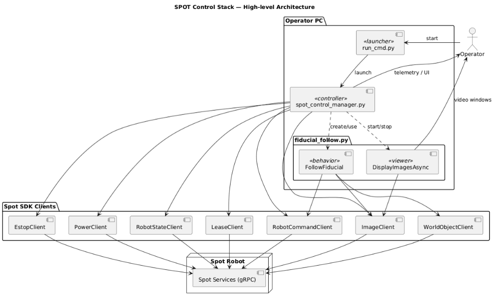
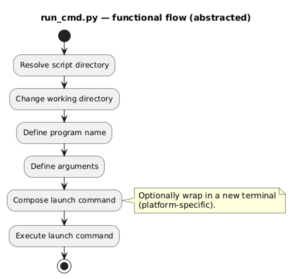
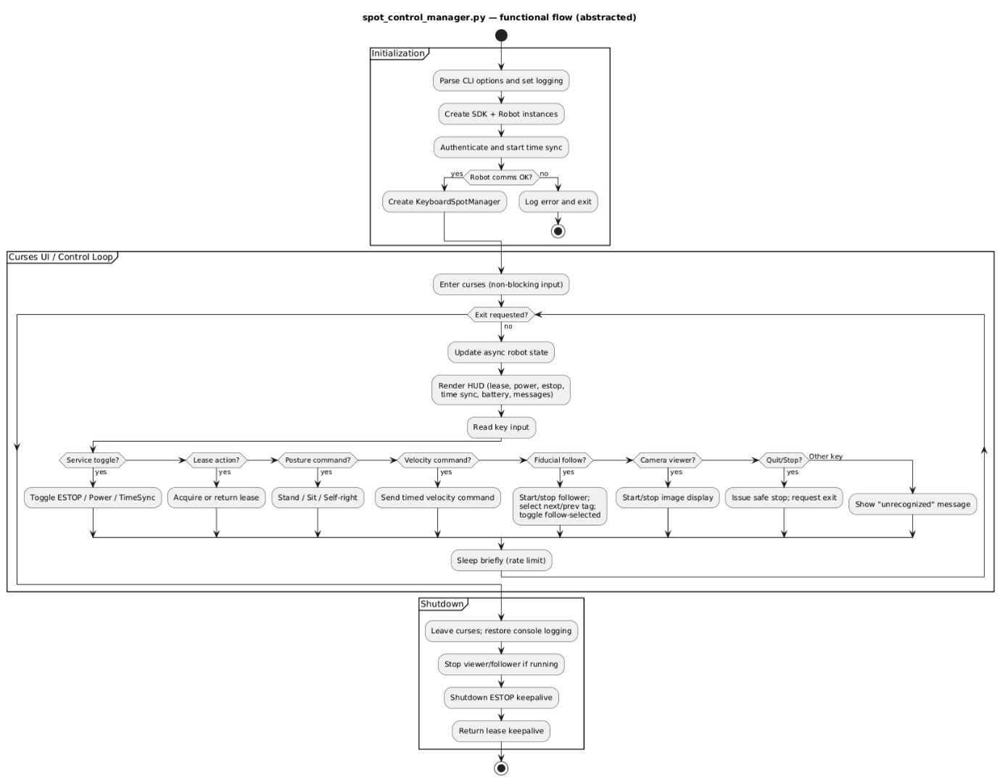
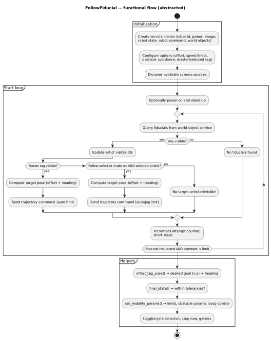
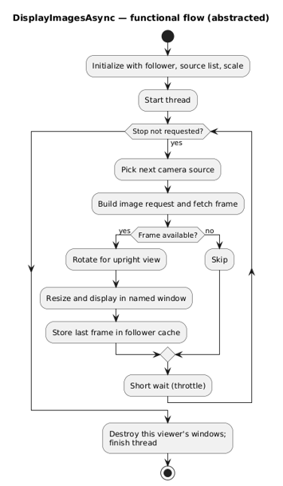

Featured project
Autonomous Navigation System for Boston Dynamics SPOT
System Architecture
A modular Python control system for Boston Dynamics' SPOT robot. It can navigate between marked points on its own while an operator watches the live camera feed and can take control at any time. A central controller manages communication, movement, power, and safety.




